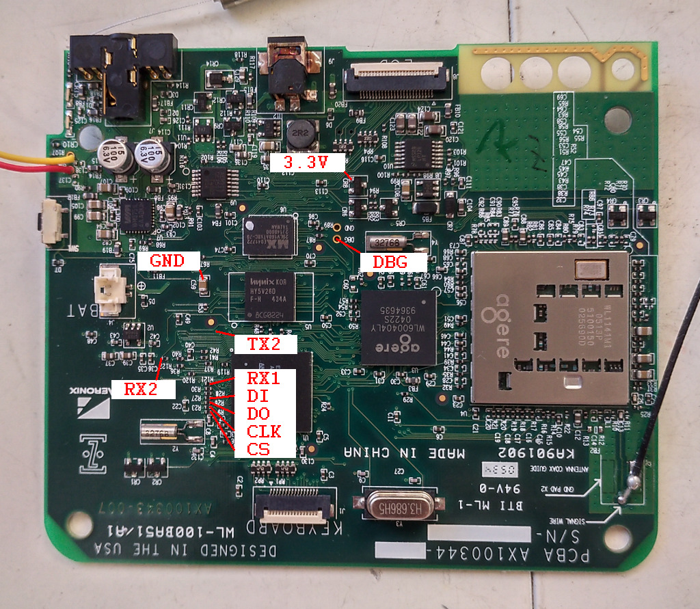
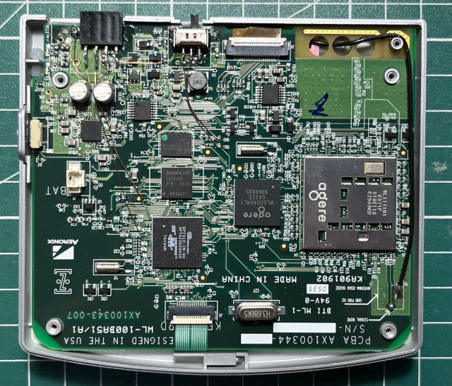
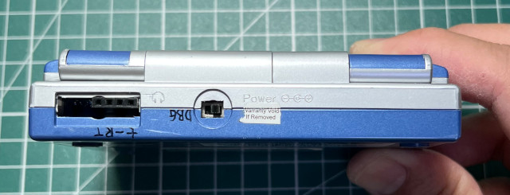
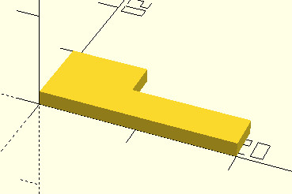
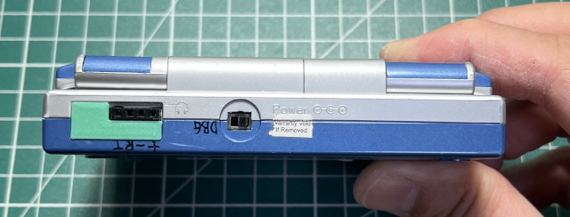

Steward
分享是一種喜悅、更是一種幸福
微電腦 - Zipit Z1 - 焊接UART接頭
參考資訊：
https://elinux.org/Zipit_Serial_Mod
焊點位置如下：

司徒把DBG拉出來，然後焊了一個電源開關，接著把RX1和RX2接在一起，當成RX使用

完成

為了更漂亮的外觀，司徒重新跳線

外觀

修補元件

OpenSCAD
cube([20, 4, 1.5]); cube([8, 8, 1.5]);
完美

Baudrate 57600bps
Aeronix 7312 BootLoader
with ZipitPet mods (1.16)
Sizing Memory...
SDRAM: 128Mbit, 8MB x 16
Memory Width: 16 bits
Memory Size: 0x00000010 Megs
Clearing Memory
Copying Ramdisk
Copying Kernel
Creating ATAGS
Booting Linux